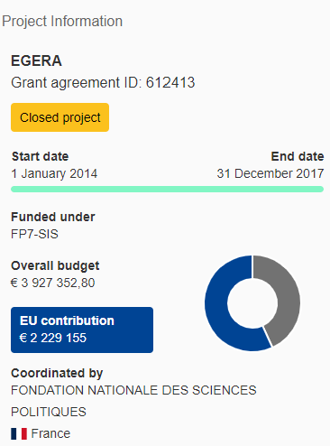

EGERA was coordinated by Sciences Po, PRESAGE. It has received funding from the European Union’s Seventh Framework Program for research.The total budget of the project amounts to €3 927 352 of which €2 229 155 corresponds to EU contribution.
Sciences Po OFCE Team
Anne Boring, OFCE Sciences Po, today Erasmus School of Economics, Erasmus University Rotterdam
Viviane Albenga, OFCE Sciences Po, today MICA Université de Bordeaux
Maxime Forest, OFCE Sciences Po, coordinateur scientifique
Hélène Périvier, OFCE Sciences Po, coordinatrice

Project Objectives
From January 2014 to December 2018, EGERA has brought together 8 research and higher education institutions across the EU (Belgium, the Czech Republic, France, Germany, the Netherlands, Portugal and Spain) and Turkey, bound by a same commitment to the dual objective of achieving gender equality in research and the academia (1), and strengthening the gender dimension in research (2). The Project aimed at fostering structural change through the implementation of transformative Gender Equality Plans (GEPs). Operationalized over the duration of the project, GEPs articulate a structural understanding of gender inequalities and bias in research with a fully-fledged set of measures and actions. These actions do cover the most salient issues with respect to the recruitment, retention, appraisal and empowerment of women in research, and to the mainstreaming of gender knowledge across disciplinary fields – notably in Science, Technology, Economics and Mathematics (STEM): Enhancing gender (in)equality monitoring instruments; Building Gender-friendly work environments; Mainstreaming Gender in Research content and curricula; Training Academic communities.
Executive Summary of the final report
Initiated in January 2014, EGERA brought together 8 research and higher education institutions across the EU and Turkey, bound by a same commitment to the dual objective of achieving gender equality in research and the academia (1), and strengthening the gender dimension in research (2) by introducing sustainable and measurable changes in the organization of our research institutions. The project aimed at fostering structural transformation, thanks to three key enabling factors: a) the strong commitment of their respective management structures and leaders; b) the involvement of all categories of stakeholders, including researchers, teaching and administrative staff, students, social partners and relevant policy agents, and c), the implementation of transformative Gender Equality Plans (GEPs).
These plans address four key areas of action, drawing upon a diagnosis of gender bias and inequalities conducted by each implementing partner. GEPs articulate a structural understanding of gender inequalities and bias in research with a fully-fledged set of measures and actions, tailor-made to the needs and organizational contexts of each institution. These actions cover the most salient issues with respect to the recruitment, retention, appraisal and empowerment of women in research. They are structured into 2 broad thematic streams (Building Gender Friendly work environment & Mainstreaming Gender in Research and curricula), and 2 supporting streams (Enhancing the monitoring of gender inequalities in research & Training academic communities). Officially endorsed and made publicly available at each partner institution, these GEPs have been implemented over the four years of the project, either as the main gender and diversity policy document, or as a supporting document to pre-existing strategies. Consecutively, these GEPs and their respective evaluations, have served as a basis for a next generation of Gender Equality Plans, to be implemented after the project’s closure (2018).
As it was the ultimate objective of EGERA, to develop a shared culture of gender equality, a core importance was given to gender training activities, as a supporting tool for the effective implementation of targeted measures and their embedment into institutions and practices. With view to ensure the sustainability of actions, their transferability to other contexts and their continuous assessment and enhancement, EGERA had been thought as Community of Practice (CoP) for experience exchange and self-reflexivity. This CoP is being developed through a variety of channels, including the full implication of respective partners in 6 out of 8 WPs, regular face-to-face workshops and on-line communication, as well as at different levels: each partner actively engaged with key stakeholders of gender equality policies in the academia at the sub-national, national and EU levels, thus contributing to an emerging, EU-wide community.
But most important, changes were brought to our respective institutions:
- Enforcement of protocols to fight sexual harassment
- Reinforcement of gender equality mechanisms
- Development or expansion of full gender, pluridisciplinary course offers
- Development of fully fledged gender training and awareness-raising plans
- Adoption of a gender sensitive communication
- Complex resolution mechanisms for increasing women’s access to senior positions
- Innovative career support measures
In addition, instruments have also been developped at the level of our partnership, such as a Structural change toolkit, two charters devoted respectively to gender-senstive communication and governance, and good practices databases, with view to enrich the cumulative effort carried out at the EU level to achieve gender equality in research and the academia. These relevant documents and instruments, will be communicated to DG Research, so as to be potentially integrated into the GEAR web-based tool developped jointly with EIGE.
Our project intended to be cumulative, drawing upon major milestones brought to the resolution of these challenges by other EU-funded projects and policy initiatives undertaken at the level of EU institutions, member states and elsewhere. It also intended to take the window of opportunity for addressing research institutions’ organizational structures and routines, ways of doing things and excellence assessment criteria, opened under the 7th Framework Programme by the European Commission (EC), and pursued under H2020. As it has been increasingly pointed out by EU reports, structures, rather than individuals and their capacities, are at stake to explain the uneven distribution of power within research organization, the low proportion of women in certain research areas or their disappearance as they move up the career ladders. This perspective has been thoroughly articulated in the notion of structural change advocated at the EU level, which underlines the key importance of stakeholders’ involvement and top leadership support, as well as the necessity of a comprehensive diagnosis of gender inequalities and institutional resistances at play to support structural change.
Simultaneously, EGERA anticipated new developments in the EU research & innovation policy by implementing socially innovative solution and building the business case of gender in research as part of a Responsible Research and Innovation (RRI). To achieve tangible results, EGERA thus developed an approach which was both ambitious and pragmatic.
Firstly, participating institutions engaged with structural changes in a way that not only entailed addressing and improving women’s working conditions in research, but also challenging governance models and deeply entrenched institutional practices. Drawing upon a structural framing of gender inequality in research and the academia, they intended to bring about changes in different realms, as pieces of a same gender equality culture which are mutually constitutive and consolidate each other. This not only necessitated to secure top management support, but also to mobilize the whole academic & research communities, including faculty, post-graduate & PhD students, and supporting or administrative staffs. It has been our argument that this effective structural changes could only be reached by increasing awareness and knowledge on gender-related issues through the use of gender training.
Secondly, to carry out ambitious actions articulated in GEPs, EGERA has primarily drawn upon approaches and instruments that have been discussed, experimented and evaluated under previous/on-going FP7 projects, complemented over the course of the project, by those developped under H2020 projects. In its extensive use of gender training, EGERA also privileged participatory and experiential methodologies used in the Gender in EU research toolkit financed by the EC, or the group model building experimented under STAGES.
As further result from this ambitious but pragmatic approach, the EGERA community has paid a great deal of attention to making commitments taken at the level of each institution towards gender equality and a gender perspective in research, as public and visible as possible. This, with view to enhance accountability and gain support. As part of this strategy, GEPs have been made quickly available to our respective communities via institutional websites and other channels, and this has also been the case for the two charters adopted under EGERA.
It is by drawing upon this comprehensive and transformative approach, that EGERA intended to introduce three main innovations:
- It was the ultimate objective of EGERA, to develop, within each partner institution, a shared culture of gender equality as a matter of Responsible Research and Innovation and a mark of research excellence. This is why EGERA did not focus on a narrow set of core issues, but embraced the issues of gender inequalities in research and the inclusion of a gender perspective in research in their complex, multi-layered dimensions. Related issues such as recruitment, appraisal and proficiency assessment procedures; conditions inhibiting women’s career development and well-being at work; or the mainstreaming of gender knowledge across disciplines and curricula, have thus been tackled at once.
- This goal was to be attained through the implementation of fully-fledged Gender Equality Plans structured into 2 broad thematic streams (Building Gender Friendly work environment & Mainstreaming Gender in Research and curricula), and 2 supporting streams (Enhancing the monitoring of gender inequalities in research & Training academic communities). Along with the core relevance given to gender training activities, continuous efforts undertaken to fully embed actions carried out in these realms into the daily functioning of our organizations, has been the trade mark of EGERA.
- In order to guarantee the sustainability of planned actions, their transferability to other contexts and their continuous assessment and enhancement, EGERA was also established as a Community of Practice (CoP) that will be maintained beyond the time line of the project. A forum for experience exchange and self-reflexivity, experimentation and social innovation, this CoP has been structured around a series of internal, face-to-face workshops and a collaborative on-line support named SARAH-AGORA (Achieving Gender equality in the Organization of Research and the Academia). It has also constantly been enriched by cross-participation in joint dissemination events with stakeholders and experts from other EU-funded initiatives, thus simultaneously integrating an EU-wide community in the making.
The objectives of EGERA for each of its reporting periods, were the following :
From January 2014 (Project Start) to July 2015 (end of the first reporting period), EGERA was not only meant to provide the grounds for resolute action in favour of gender equality since already at the stage of proposal, basic diagnoses of gender bias and inequalities at play had been collected to highlight major issues and challenges, and strong evidence of top-leadership commitment had been secured. Therefore, the first eighteen months of the project were expected to bring about key enabling conditions for change, innovative instruments and tangible results in respective implementing organizations :
✓ Providing partners with key additional resources to identify, measure and follow up gender bias, gender inequalities as well as relevant organizational and cultural hindrances to achieving greater equality and introducing a gender perspective in research. ✓ Providing the EGERA community with in-depth, solution-oriented analyses so as to support effective measures to tackle gender bias and building a shared gender equality culture ✓ Institutionalizing transformative knowledge-transfer schemes, in the form of comprehensive gender training plans, complemented by concepts, business cases and guidelines for action ✓ Establishing efficient communication resources, both as supporting tools for the Community of Practices (CoP), and external communication and dissemination channels.
These objectives were to be materialized into 8 project’s milestones. Not every milestone did correspond to a deliverable (in the form of standards or reports), as MS1 and MS3 consisted in the full institutional endorsement of GEPs and Gender Training Plans, respectively, while MS6 referred to the first cross-structural change projects conference to be held under EGERA.
From July 2015 to December, 2016 (end of the second reporting period), the project was expected to bring about tangible changes and achievements as far as implementing structural changes for gender equality and bringing a gender perspective in research were concerned, through achieving the following objectives:
✓ Supporting the linkage between the strategic mission statements of each implementing partner, and the objective of achieving gender equality ✓ Broadening the scope of awareness-raising and training activities of the project to all components of the academic community ✓ Addressing institutional resistances and ensuring sustainable top management support to the project’s objective ✓ Disseminating projects’ achievements towards academic and non-academic audiences (students, policy stakeholders, the media…) through intensive, multi-level communication and dissemination activities, with emphasis on STEMs, cross-EU-funded projects activities ✓ Providing actors of the ERA and beyond with valid instruments for implementing gender equality policies in research performing organizations
These objectives were notably reflected in four project’s milestones. Again, not every milestone did correspond to a (single) deliverable (in the form of reports), as MS8 consisted in a co-event on Gender in STEM convened by partner 7 (UVGZ) on M21, and MS9 and MS11 consisted each in a bounce of deliverables. For MS9, it was the release of the Antwerp Charter on Gender sensitive communication on M24 (corresponding to D.3.4) officially endorsed by all implementing partners by early 2016, and of the Charter on Gender Sensitive Governance in Research and Higher Education, endorsed and published by all implementing partner by the end of 2016. For MS11, it consisted in three reports submitted by M36: the 3rd Gender Equality Report (D.2.5) the 2nd Report on Dissemination activities (D.7.6) and the 2nd Evaluation and Monitoring report (D.8.3). Altogether, these reports were meant to provide an intermediate assessment of structural changes brought by EGERA after three years of project implementation. Finally, MS10 consisted in a Structural change toolkit, of which a technical description was delivered on M24 (D.7.5). This toolkit has been continuously enriched since, and regularly updated versions were made available on EGERA website, best practices being also disseminated through other toolkits and public databases, such as the GEAR repository.
Finally, between January, 2017 and December 2017 (end of the third reporting period), EGERA was ascribed the following objectives:
✓ Institutionalizing structural change in favour of gender equality and bringing a gender perspective in research, through embedding adopted documents and measures into the institutional framework of each institution ✓ Ensuring the sustainability of project’s results through the planning of the next generation of GEPs and/or Gender equality strategies to be adopted in each implementing institution ✓ Disseminating projects’ achievements towards academic and non-academic audiences (students, policy stakeholders…) through intensive, multi-level communication and dissemination activities, with emphasis on STEMs and cross-EU-funded projects activities
Although this last reporting period only included the ultimate milestone of the project (MS12, Final dissemination conference), it has been key to ensure that lessons have been learnt so as to inform further actions, for instance in the form of new generations of Gender Equality Plans, and that the firm commitment of participating institutions to the objectives underpinning the project, will be maintained beyond its completion.
Project Results:
I. Description of main results per reporting period
I.1 Description of the work performed over the first reporting period (January 2014-June 2015)
EGERA has been a fully collaborative project: with exception of WP1 (Management) and WP8 (monitoring and evaluation) respectively entrusted to the coordinator and an external evaluator, other 6 WPs have been carried out by all implementing partners, under the leadership of one of them. Hence, as for other reporting periods of the project, the work carried out over the first eighteen months of EGERA, resulted from the efforts undertaken by all implementing organizations.
In March, 2014, EGERA was officially launched at Sciences Po Paris, in presence of over 120 attendees, including senior researchers and administrative staffs from partner organizations, members of the advisory committee, external academics, students, policy makers and the media. Two ministers in office – the French Ministers of Research and Higher Education, and Women’s Rights, inaugurated the project through exclusive video messages in which they both brought full support to the objectives and concept of EGERA. Two articles were released in major French daily newspapers (Libération, Le Figaro) to report about the project, and a national broadcast program also extensively referred to EGERA. Over the following months, 15 other meetings and projects’ events have been held successfully and according to the planned schedule in 5 countries and all EGERA core teams actively engaged in communication and dissemination activities towards the academia, policy-makers and the larger public, including the private sector. This effort was effectively supported by a sounded communication plan adopted at the start of the project, a dedicated website launched on M6 (www.egera.eu) and a Facebook account. Over this first period, 41 out of 45 planned tasks have been initiated over this reporting period, enabling EGERA to reach its full speed.
At the level of the consortium, the work carried out in the respective WPs was supported by regular face-to-face meetings, on-going monitoring and evaluation and on-line communication through SARAH-AGORA, a project management tool developed by the coordinator and complemented by ad-hoc on-line forums. The work undertaken under EGERA was structured at two levels:
- Through 8 WPs, 45 tasks, 39 deliverables, 16 milestones and 36 events
- Through 7 GEPs complemented by 7 Gender Training Plans (one per partner institution involved in structural changes)
For this reason, while WPs and tasks were meant to structure and support the effective implementation of GEPs, activities carried out under EGERA were by no mean limited to the planned deliverables, events and milestones: the implementation of each GEP generated tailor-made activities through which structural changes were being initiated and incorporated into practices. As for the first level, over the 18 first months of the project, all 21 planned deliverables have been submitted on time (out of 39 until the end of the project), strictly respecting the content overview indicated in Annex I of the grant agreement. This constituted a significant achievement given the high pace of the work plan and the collaborative nature of EGERA, which indicated that partners have been successful in building mutual trust and efficient collaborations, implementing their own work and coordinating the work of other partners as for WP leaders. Among these documents, 6 deliverables have been submitted, which were of specific relevance to the project’s objectives and expected outcomes:
Under WP2, the first Gender Equality Report submitted on M12 provided more thorough diagnoses of gender bias and inequalities at play, equipping partner institutions with a valid framework for data collection, including key areas and basic indicators. This deliverable also maps out the main spaces progression in assessing gender inequalities. Under WP3, the first Gender Equality Culture Surveys Report (M18) contributed to make EGERA distinctive, as it places the main issues of the project in the broader perspective of embedding structural changes into a shared culture of equality. This endeavour requested partner organizations to challenge contextual specificities with a common template, and brought them further in the knowledge of their own communities. Under WP4, Gender training plans and concepts adopted on M8 provided a framework for knowledge-transfer and awareness-rising, which relies upon available standards promoted by the European Institute for Gender Equality. Under WP5, which embodied the specific attention paid by EGERA to bias entrenched into governance and evaluation mechanisms, the Pilot study delivered on M8 by Sciences Po provided a theoretical framework drawing upon the policy frame analysis developed under QUING (FP6). WP7 also brought a key contribution to the project, through the website delivered on M6, which reflects both the stage of main EGERA activities, and the impact of the project on partner organizations and beyond. Under WP8, the First Monitoring and Evaluation Report submitted on M18 provided a detailed account of project’s implementation, focused on the further enhancement of our CoP, and the activities held under our respective GEPs and GT plans.
Similarly, all the 7 milestones events, ratifications or deliverables were successfully met. In particular, the ratification of GEPs and GT plans at the highest management level, ensured that tailor-made actions detailed after the project’s start, are fully endorsed, whereas the first co-event held with the STAGES project highly contributed to the visibility of EGERA, and its participation in the broader CoP that gathers EU-funded structural change projects. However, this account of the work performed since M1 would not fully reflect the endeavour of EGERA, without referring to daily activities which gave substance to the tasks listed in Annex 1 of EGERA Grant Agreement. Carried out in respective partner institutions, those enabled to progressively expand awareness and action in prospect for gender equality, from core teams towards researchers, managers, students and the whole academic communities. Some of the main results listed below, are the direct outcome of this inclusive, multi-level stakeholders’ commitment to the project’s objectives.